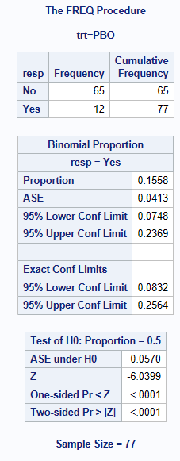
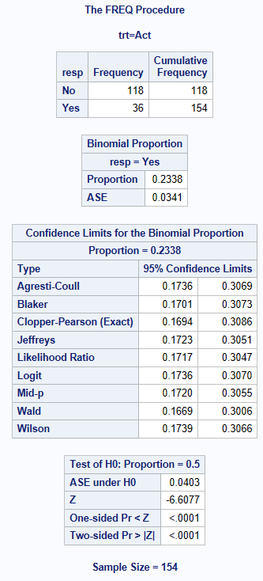
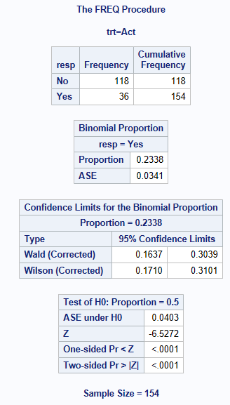

data adcibc2 (keep=trt resp) ;
set adcibc;
if aval gt 4 then resp="Yes";
else resp="No";
if trtp="Placebo" then trt="PBO";
else trt="Act";
run;Confidence intervals for a Proportion in SAS
Introduction
See separate page for general introductory information on confidence intervals for proportions.
Data Used
The adcibc data stored here was used in this example, creating a binary treatment variable trt taking the values of Act or PBO and a binary response variable resp taking the values of Yes or No. For this example, a response is defined as a score greater than 4.
The below shows that for the Active Treatment, there are 36 responders out of 154 subjects = 0.2338 (23.38% responders).
proc freq data=adcibc2;
table trt*resp/ nopct nocol;
run;
Methods for Calculating Confidence Intervals for a Single Proportion
Here we are calculating a \(100(1-\alpha)\%\) (usually 95%) confidence interval for the proportion \(p\) of responders in the active treatment group, estimated from the sample proportion \(\hat p = x / n\).
SAS PROC FREQ in Version 9.4 can compute 11 methods to calculate CIs for a single proportion, an explanation of most of these methods and the code is shown below. See BINOMIAL1 for more information on SAS parameterization. It is recommended to always sort your data prior to doing a PROC FREQ.
For more information about some of these methods in R & SAS, including which performs better in different scenarios see Five Confidence Intervals for Proportions That You Should Know about2 and Confidence Intervals for Binomial Proportion Using SAS3. Key literature on the subject includes papers by Brown et al.4 and Newcombe5.
Clopper-Pearson (Exact or binomial CI) Method
With binary endpoint data (response/non-response), we make the assumption that the proportion of responders has been derived from a series of Bernoulli trials. Trials (Subjects) are independent and we have a fixed number of repeated trials with an outcome of respond or not respond. This type of data follows the discrete binomial probability distribution, and the Clopper-Pearson6 (‘exact’) method uses this distribution to calculate the CIs.
This method guarantees strictly conservative coverage, but has been noted to be excessively conservative, as for any given proportion, the actual coverage probability can be much larger than \((1-\alpha)\).
The Clopper-Pearson method is output by SAS as one of the default methods (labelled as “Exact Conf Limits” in the “Proportion” ODS output object), but you can also specify it using BINOMIAL(LEVEL="Yes" CL=CLOPPERPEARSON); which creates a separate output object “ProportionCLs”.
Normal Approximation Method (Also known as the Wald Method)
The traditional alternative to the Clopper-Pearson (‘Exact’) method is the asymptotic Normal Approximation (Wald) CI. The poor performance of this method is well documented - it can fail to achieve the nominal confidence level even with large sample sizes, and there is a consensus in the literature that it should be avoided4, p128. Nevertheless, it remains a default output component in SAS, so is included here for reference.
In large random samples from independent trials, the sampling distribution of proportions approximately follows the normal distribution. The expectation of a sample proportion is the corresponding population proportion. Therefore, based on a sample of size \(n\), a \((1-\alpha)\%\) confidence interval for population proportion can be calculated using the normal approximation as follows:
\(p\approx \hat p \pm z_{\alpha/2} \sqrt{\hat p(1-\hat p)/n}\), where \(\hat p=x/n\) is the sample proportion, \(z_{\alpha/2}\) is the \(1-\alpha/2\) quantile of a standard normal distribution corresponding to the confidence level \((1-\alpha)\), and \(\sqrt{\hat p(1-\hat p)/n}\) is the estimated standard error.
One should note that the approximation can become increasingly unreliable as the proportion of responders gets closer to 0 or 1 (e.g. 0 or 100% responding). In this scenario, common issues consist of:
it does not respect the 0 and 1 proportion boundary (so you can get a lower CI of -0.1 or an upper CI of 1.1!)
the derived 95% CI may cover the true proportion substantially less than 95% of the time
the left and right tail probabilities of the 95% CI are asymmetrical, such that there is generally more (and often substantially more) than 2.5% chance of the interval not covering the true proportion at one end (as observed in Newcombe5). Note that symmetrical or “equal-tailed” coverage (or what Newcombe calls “central interval location”) has direct relevance to the type 1 error for non-inferiority hypothesis tests, but is also a generally desirable property.
Although these undesirable features become more severe for proportions close to 0 or 1, they also occur more generally for the Wald interval, and any of the alternative methods should be preferred instead.
The Wald method can be derived with or without a Yates “continuity correction”. In principle, this correction is intended to approximate the conservative coverage of the Clopper-Pearson method, but it fails to achieve the minimum coverage criterion, and tail probabilities remain imbalanced. (Note that in general, there is some debate over the use of the term “correction” - particularly when applied to other methods, the adjustment produces coverage probabilities that are further away from the nominal confidence level to achieve strictly conservative coverage, which may or may not be more “correct”, depending on your point of view.)
The Wald normal approximation method is output by SAS as a default method, but you can also specify it using BINOMIAL(LEVEL="Yes" CL=WALD);
The “continuity corrected” version is obtained using BINOMIAL(LEVEL="Yes" CL=WALD(CORRECT));
Wilson method (Also known as the Score method)7
The Wilson (Score) method is also based on an asymptotic normal approximation, but uses a score statistic that replaces the estimated variance \(\hat V(\hat p)=\hat p(1-\hat p)/n\) with the true variance \(V(\hat p)=p(1-p)/n\). The resulting score is then rearranged to a quadratic equation and solved for p for a given \(\alpha\). This method resolves many of the issues affecting the Wald method - it avoids boundary violations, and achieves coverage probabilities close to the nominal level (on average). However, it over-corrects the asymmetric coverage of Wald - the location of the Wilson interval is shifted too far towards 0.5.
The method can be derived with or without a Yates continuity correction. The corrected interval closely approximates the coverage of the Clopper-Pearson method, but only in terms of overall two-sided coverage - due to the asymmetric coverage, it does not guarantee that the non-coverage probability is less than \(\alpha/2\).
Let \(\hat p\) =r/n, where r= number of responses, and n=number of subjects, \(\hat q = 1- \hat p\), and z= the appropriate value from standard normal distribution: \(z_{1-\alpha/2}\).
For example, for 95% confidence intervals, \(\alpha=0.05\), using standard normal tables, z in the equations below will take the value =1.96. Calculate 3 quantities
\[ A= 2r+z^2\]
\[ B=z\sqrt(z^2 + 4r \hat q) \] \[ C=2(n+z^2) \]The method calculates the confidence interval [Lower, Upper] as: [(A-B)/C, (A+B)/C]
A = 2 * 36 + 1.96^2 = 75.8416
B = 1.96 * sqrt (1.96^2 + 4 x 36 x 0.7662) = 20.9435
C = 2* (154+1.96^2) = 315.6832
Lower interval = A-B/C = 75.8416 - 20.9435 / 315.6832 = 0.17390
Upper interval = A+B/C = 75.8416 + 20.9435 / 315.6832 = 0.30659
CI = 0.17390 to 0.30659
The Wilson (score) method is output by SAS using BINOMIAL(LEVEL="Yes" CL=Wilson);
The continuity corrected Wilson method is specified using BINOMIAL(LEVEL="Yes" CL=WILSON(CORRECT));
The only differences in the equations to calculate the Wilson score with continuity correction is that the equations for A and B are changed as follows:
\[ A= 2r+z^2 -1\]
\[ B=z\sqrt(z^2 - 2 -\frac{1}{n} + 4r \hat q) \]
Agresti-Coull method
The Agresti-Coull method is a ‘simple solution’ designed to improve coverage compared to the Wald method and still perform better (i.e. less conservative) than Clopper-Pearson particularly when the probability isn’t in the mid-range (0.5). It is less conservative whilst still having good coverage. The only difference compared to the Wald method is that it adds \(z^2/2\) successes and failures to the original observations (when \(\alpha=0.05\) this increases the sample by approximately 4 observations).
The Agresti-Coull method is output by SAS using BINOMIAL(LEVEL="Yes" CL=AGRESTICOULL);
Jeffreys method
The Jeffreys method is a particular type of Bayesian Highest Probability Density (HPD) method. For binomial proportions, the beta distribution is generally used for the conjugate prior, which consists of two parameters \(\alpha'\) and \(\beta'\). Setting \(\alpha'=\beta'=0.5\) is called the Jeffreys prior. This is considered as non-informative for a binomial proportion. The resulting posterior density gives the CI as
\[ (Beta (x + 0.5, n - x + 0.5)_{\alpha/2}, Beta (x + 0.5, n - x + 0.5)_{1-\alpha/2}) \]
Boundary modifications are applied to force the lower limit to 0 if x=0 and the upper limit to 1 if x=n.
The coverage probabilities of the Jeffreys method are centred around the nominal confidence level on average, with symmetric “equal-tailed” 1-sided coverage8 Appx S3.5. This interval is output by SAS using BINOMIAL(LEVEL="Yes" CL=Jeffreys);
Binomial based Mid-P method
The mid-P method is similar to the Clopper-Pearson method, in the sense that it is based on exact calculations from the binomial probability distribution, but it aims to reduce the conservatism. It’s quite a complex method to compute compared to the methods above and rarely used in practice [Ed: what source is there for this statement?]. However, like the Jeffreys interval, it has excellent 1-sided and 2-sided coverage properties for those seeking to align mean coverage with the nominal confidence level9.
The mid-P method is output by SAS using BINOMIAL(LEVEL="Yes" CL=MIDP);
Blaker method10
The Blaker method is a less conservative alternative to the Clopper-Pearson exact CI. It derives the CI by inverting the p-value function of a 2-sided exact test, so it achieves strictly conservative 2-sided coverage, but as a result the 1-sided coverage is not strictly conservative.
The Clopper-Pearson CI’s are always wider and contain the Blaker CI limits. It’s adoption has been limited due to the numerical algorithm taking longer to compute compared to some of the other methods especially when the sample size is large. NOTE: Klaschka and Reiczigel11 is yet another adaptation of this method.
The Blaker method is output by SAS using BINOMIAL(LEVEL="Yes" CL=BLAKER);
Continuity Adjusted Methods
SAS offers the ‘CORRECT’ option for producing more conservative versions of the Wald and Wilson Score intervals.
Consistency with hypothesis tests
Within SAS PROC FREQ for the asymptotic methods, consistency with the binomial test is provided by the Wilson CI, because the asymptotic test uses the standard error estimated under the null hypothesis (i.e. the value specified in the BINOMIAL(P=...) option of the TABLES statement.
If an EXACT BINOMIAL; statement is used, the resulting test is consistent with the Clopper-Pearson CI.
An exact hypothesis test with mid-P adjustment (consistent with the mid-P CI) is available via EXACT BINOMIAL / MIDP; but the output only gives the one-sided p-value, so if a 2-sided test is required it needs to be manually calculated by doubling the one-sided mid p-value.
Example Code using PROC FREQ
By adding the option BINOMIAL(LEVEL="Yes") to your ‘PROC FREQ’ TABLES statement, SAS outputs the Normal Approximation (Wald) and Clopper-Pearson (Exact) confidence intervals as two default methods, derived for the Responders = Yes. If you do not specify the LEVEL you want to model, then SAS assumes you want to model the first level that appears in the output (alphabetically).
It is very important to ensure you are calculating the CI for the correct level! Check your output to confirm, you will see below it states resp=Yes !
Caution is required if there are no responders in a group (aside from any issues with the choice of confidence interval method), as SAS PROC FREQ (as of v9.4) does not output any confidence intervals in this case. If the LEVEL option has been specified, an error is produced, otherwise the procedure by default generates CIs for the proportion of non-responders. Note that valid CIs can (and should) be obtained for both p = 0/n and p = n/n. If needed, the interval for 0/n can be derived as 1 minus the transposed interval for n/n.
The output consists of the proportion of resp=Yes, the Asymptotic SE, 95% CIs using normal-approximation method, 95% CI using the Clopper-Pearson method, and then a Binomial test statistic and p-value for the null hypothesis of H0: Proportion = 0.5.
proc sort data=adcibc2;
by trt;
run;
proc freq data=adcibc2;
table resp/ nopct nocol BINOMIAL(LEVEL="Yes");
by trt;
run;
By adding the option BINOMIAL(LEVEL="Yes" CL=<name of CI method>), the other CIs are output as shown below. You can list any number of the available methods within the BINOMIAL option CL=XXXX separated by a space. However, SAS will only calculate the WILSON and WALD or the WILSON(CORRECT) and WALD(CORRECT). SAS won’t output them both from the same procedure.
BINOMIAL(LEVEL="Yes" CL=CLOPPERPEARSON WALD WILSON AGRESTICOULL JEFFREYS MIDP LIKELIHOODRATIO LOGIT BLAKER)will return Agresti-Coull, Blaker, Clopper-Pearson(Exact), Wald(without continuity correction) Wilson(without continuity correction), Jeffreys, Mid-P, Likelihood Ratio, and LogitBINOMIAL(LEVEL="Yes" CL=ALL);will return Agresti-Coull, Clopper-Pearson (Exact), Jeffreys, Wald(without continuity correction), Wilson (without continuity correction). [If the developers of SAS are reading this, it would seem more natural/logical for Mid-P to be included here instead of Clopper-Pearson! However, note that the ALL option is not mentioned in the current PROC FREQ documentation.]BINOMIAL(LEVEL="Yes" CL=ALL CORRECT);will return Agresti-Coull, Clopper-Pearson (Exact), Jeffreys, Wald (with continuity correction), Wilson(with continuity correction). In previous versions of SAS this was coded asBINOMIALc(...), but that is no longer documented. [… following the above comment, it is also not logical for Jeffreys and Agresti-Coull to be included here alongside methods designed to achieve conservative coverage]BINOMIAL(LEVEL="Yes" CL=WILSON(CORRECT) WALD(CORRECT));will return Wilson (with continuity correction) and Wald (with continuity correction)
proc freq data=adcibc2;
table resp/ nopct nocol
BINOMIAL(LEVEL="Yes"
CL= CLOPPERPEARSON WALD WILSON
AGRESTICOULL JEFFREYS MIDP
LIKELIHOODRATIO LOGIT BLAKER);
by trt;
run;
proc freq data=adcibc2;
table resp/ nopct nocol
BINOMIAL(LEVEL="Yes"
CL= WILSON(CORRECT) WALD(CORRECT));
by trt;
run;

SAS output often rounds to 3 or 4 decimal places in the output window, however the full values can be obtained using SAS ODS statements. ods output binomialcls=bcl; and then using the bcl dataset, in a data step to put the variable out to the number of decimal places we require.
10 decimal places shown here ! lowercl2=put(lowercl,12.10);
References
Five Confidence Intervals for Proportions That You Should Know about
Brown LD, Cai TT, DasGupta A (2001). “Interval estimation for a binomial proportion”, Statistical Science 16(2):101-133
Newcombe RG (1998). “Two-sided confidence intervals for the single proportion: comparison of seven methods”, Statistics in Medicine 17(8):857-872
Clopper,C.J.,and Pearson,E.S.(1934),“The Use of Confidence or Fiducial Limits Illustrated in the Case of the Binomial”, Biometrika 26, 404–413.
D. Altman, D. Machin, T. Bryant, M. Gardner (eds). Statistics with Confidence: Confidence Intervals and Statistical Guidelines, 2nd edition. John Wiley and Sons 2000.
Laud PJ (2017) Equal-tailed confidence intervals for comparison of rates. Pharmaceutical Statistics 16: 334-348
Laud PJ (2018) Corrigendum: Equal-tailed confidence intervals for comparison of rates. Pharmaceutical Statistics 17: 290-293
Blaker, H. (2000). Confidence curves and improved exact confidence intervals for discrete distributions, Canadian Journal of Statistics 28 (4), 783–798
Klaschka, J. and Reiczigel, J. (2021). “On matching confidence intervals and tests for some discrete distributions: Methodological and computational aspects,” Computational Statistics, 36, 1775–1790.